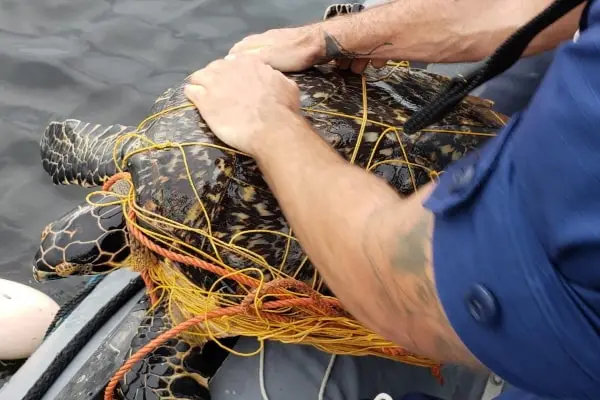
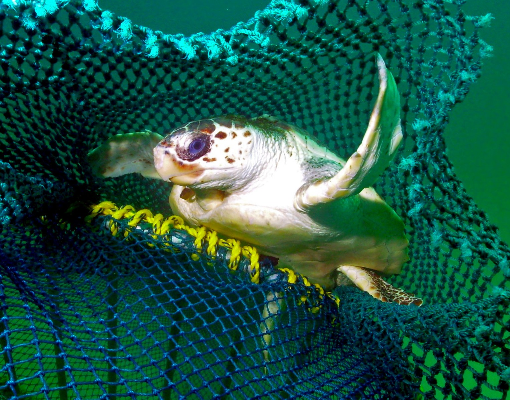

Threats to Turtles
Turtles face various threats that put their populations at risk. Habitat loss, pollution, climate change, illegal trade, bycatch, predation, and invasive species all pose significant challenges to turtles worldwide. These threats can disrupt nesting sites, contaminate their habitats, alter their food availability, lead to overexploitation, cause injury or death through unintended capture, and impact their overall population numbers. Conservation efforts are essential to safeguard turtles and their habitats, focusing on habitat protection, sustainable practices, awareness campaigns, and law enforcement to address these threats effectively.


